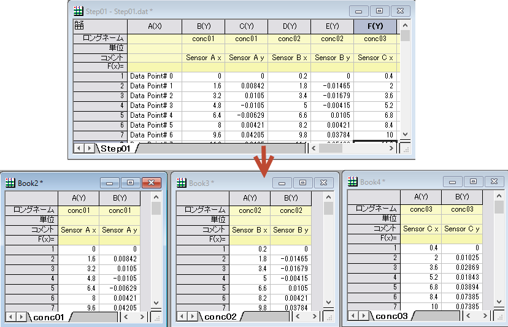

Originには、1つのワークシートを複数のワークシートに分割するツールがあります。分割方法としては、n列ごと、n 行ごと、レベル行によるグループごとから指定して新しいシートに分離できます。wsplitダイアログは、Xファンクションwsplitを使用しています。
| 再計算 |
再計算モードを指定します。
|
|---|---|
| 入力ワークシート |
分割するワークシートです。Origin 2017bから、CTRLキーを押しながら列範囲を選択して分割可能です。シート全体でなくても分割できます。 範囲の設定に関する詳細は、入力データを指定するをご覧ください。 |
| 分割モード |
どのように分割するか指定します。
|
| 列の数 | 分割モードを列の数によるにしたとき有効です。全てのn毎に指定して、新しいワークシートを作成します。(参照列ごとには対応していません) |
| 最初のN列を保持する | 分割モードを列番号によるまたは列ラベルによるにしたとき有効です。元のワークシートの最初のn列を指定して、分割された全ての結果シートにおいても保持されるようにします。これらの最初のn列は、列番号によるまたは列ラベルによるから除外されます。 |
| 行数 | 分割モードを行数によるにしたとき有効です。全てのn毎に指定して、新しいワークシートを作成します。(参照列のみに適用) |
| 列ラベル | 分割モードを列ラベルによるにしたとき有効です。新しいワークシートに分割する際に、列をグループ化する情報が入力された列ラベルを指定します。 |
| 参照列 | 分割モードを参照列にしたとき有効です。グループ化変数を含む列を指定します（複数選択可）。 複数列選択した場合、順序リストでどのように分割するか決定します。 |
| 分割 | 選択した単一の参照列に対してのみ使用できます。選択した参照列に従ってワークシートを分割する方法を指定します。
|
| 許容値 | 分割モード = 参照列で、分割=値による/値の変更によるのとき、このドロップダウンボックスを使用して、数値が変更されたがどうかを判断するときの許容値を設定できます。 |
| 各曲点を含める | 分割を方向変更によるにしたとき、このドロップボックスを使用して各曲点の処理方法を決定し、前のグループまたは次のグループに含めることができます。 |
| 結果内に参照列を保持 | 分割した結果付きの参照列データの出力。(参照列のみに適用) |
| 参照列による結果を並べ替え | 結果に参照列を保存をチェックしたときに、分割結果の行を参照値で並べ替えるかどうかを指定します。
このチェックボックスは、方向の変更によるまたは方向のリセットによるによるに設定された分割コントロールでのみ使用できます。 |
| 欠損値を除外 | 空のセルや欠損値("--")を含むセルを分割した結果から除外します。(参照列のみに適用) |
| 列の数式を結果にコピーする | ソースワークシートに列の数式がある場合、式をどう扱うか設定します。
|
| 元のワークシートの維持 | 元のワークシートをそのまま残します。チェックを付けないと元のワークシートは削除されます。 |
| スパークラインを表示する | 出力ワークシートの列のスパークラインを表示します。 |
| 出力ワークシート | 出力ワークシートを指定します。
範囲制御についてはこちらを参照してください：出力結果 |
| 結果シート名事前設定 | 分割モードを参照列、分割を値によるにしたとき有効です。
Origin 2019bでは、このオプションはデフォルトで%Vに設定されており、グループ情報シートの名前と合わせてサブグループごとに新しいシートを出力します。 |
Note: Origin 2017から、列のショートネームは、アルファベット順に制限されます。初期設定ではこれは編集出来ません。この理由から、ダイアログのショートネームを保持オプションは非表示になりました。Origin 2017より前のバージョンで作成したプロジェクトを開く場合や、スプレッドシートセル表記をオフにしている場合で、分割後もショートネームを保持したい場合、以下のようにします。
@SSG = 1 |